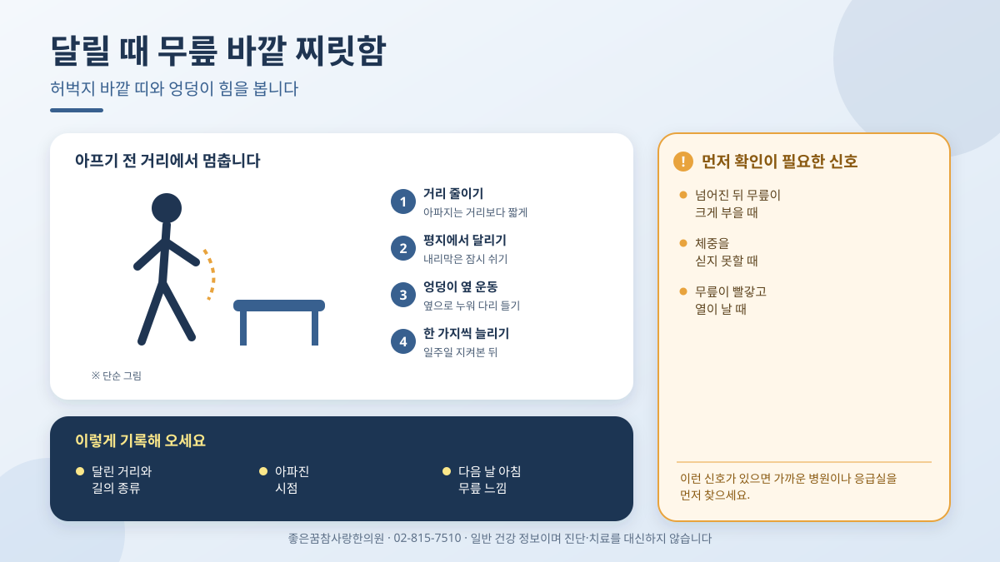

이종호 한의사 감수좋은꿈참사랑한의원 대표원장 (한의사 면허번호 19769)발행 2026-11-26 · 수정 2026-11-26
이 글의 차례
강변을 따라 달린 지 20분쯤 지났을 때, 무릎 바깥쪽에서 찌릿한 통증이 올라옵니다. 처음엔 참고 달려 보지만 한 걸음마다 바늘로 찌르는 것 같아 결국 걷게 됩니다. 걸으면 조금 나아지는데, 다시 뛰려 하면 같은 자리가 또 아픕니다.
이상한 점은 달리지 않을 때는 거의 아프지 않다는 것입니다. 평소 걷거나 앉아 있을 때는 멀쩡하다가, 일정한 거리나 시간을 넘기면 어김없이 같은 자리가 아파 옵니다. 내리막길이나 계단을 내려갈 때 더 심하다는 분도 많습니다.
이런 모습은 러닝을 즐기는 분들에게 흔한 장경인대 증후군의 전형적인 이야기입니다. 허벅지 바깥쪽을 따라 골반에서 무릎 아래까지 길게 이어지는 단단한 띠가 무릎 바깥쪽 뼈 돌출부 위를 지나며 자극을 받는 상태를 말합니다.
무릎 관절 안이 다친 것과는 다른 자리이고 다른 이유로 생기는 경우가 많아서, 달리는 양과 방식, 엉덩이 근육을 함께 살피면 실마리가 보이곤 합니다. 오늘은 그 이야기를 차근차근 해 보겠습니다.
장경인대는 어떤 구조인가요
장경인대는 이름은 인대지만, 실제로는 골반 바깥쪽 근육에서 시작해 허벅지 바깥을 따라 내려와 정강이뼈 바깥쪽 위에 붙는 길고 단단한 섬유 띠입니다. 손으로 허벅지 바깥쪽을 눌러 보면 근육보다 단단한 줄이 만져집니다.
이 띠는 걷고 달릴 때 골반과 무릎을 바깥쪽에서 붙잡아 다리가 안쪽으로 무너지지 않도록 도와줍니다. 스스로 늘어나거나 줄어드는 힘은 거의 없어서, 띠 위쪽에 붙은 근육이 얼마나 긴장해 있는지에 따라 팽팽함이 달라집니다.
무릎 바깥쪽에는 허벅지뼈 끝이 살짝 튀어나온 자리가 있습니다. 무릎을 30도 안팎으로 굽혔다 펼 때 이 띠가 그 돌출부 위를 지나가는데, 달리기는 바로 이 각도를 수천 번 반복하는 운동입니다.
왜 달릴 때만 무릎 바깥쪽이 아플까요
가장 흔한 이유는 달리는 양이 갑자기 늘어난 것입니다. 대회를 앞두고 거리를 확 늘렸거나, 쉬다가 예전 기록대로 다시 달렸거나, 주말에 몰아서 길게 달린 뒤에 시작되는 경우가 많습니다.
엉덩이 바깥쪽 근육이 약하거나 쉽게 지치는 것도 중요한 이유입니다. 이 근육이 한 다리로 착지할 때 골반을 붙잡아 주지 못하면 골반이 반대쪽으로 처지고 무릎이 안쪽으로 모이며, 허벅지 바깥 띠가 더 팽팽하게 당겨집니다.
내리막 달리기, 한쪽으로 기운 도로 가장자리 달리기, 트랙을 한 방향으로만 도는 달리기도 한쪽 다리의 바깥 띠에 부담을 몰아줍니다. 보폭을 너무 크게 해 뒤꿈치로 쿵 내딛는 습관도 무릎이 그 각도를 오래 지나게 만듭니다.
밑창이 한쪽으로 많이 닳은 신발, 갑자기 바꾼 신발도 살펴볼 거리입니다. 그래서 진료실에서는 무릎 한 곳보다 달리는 양과 길, 신발, 엉덩이 힘을 한꺼번에 여쭙니다.
비슷한 무릎 통증과는 어떻게 다른가요
무릎 바깥쪽 관절 틈이 아프고, 무릎을 비틀 때 걸리거나 잠기는 느낌이 있다면 바깥쪽 반월상연골 문제를 함께 생각합니다. 장경인대 증후군은 관절 틈보다 조금 위쪽이 아프고, 걸리는 느낌보다는 달리는 중 찌릿한 통증이 중심입니다.
무릎뼈 주변이나 앞쪽이 아프면 슬개대퇴통증을, 무릎뼈 바로 아래가 아프면 무릎 힘줄 문제를 생각합니다. 무릎 바깥쪽 통증과 함께 허리에서 다리 바깥쪽으로 저림이 내려온다면 허리 쪽에서 오는 신호인지도 살펴봅니다.
여러 가지가 겹쳐 있는 분도 있습니다. 바깥쪽이 아파 걸음을 바꾸다 보니 무릎 앞쪽까지 시큰해지는 식입니다. 그래서 아픈 자리를 하나씩 눌러 보며 나누어 보는 과정을 거칩니다.
집에서 해 볼 수 있는 간단한 확인
의자에 앉아 무릎을 90도로 굽히고, 무릎 바깥쪽 관절 틈보다 손가락 두 마디쯤 위의 뼈가 튀어나온 자리를 찾아 엄지로 눌러 보세요. 그 상태로 무릎을 천천히 폈다 굽혔다 할 때 평소의 찌릿함이 나오는지 확인해 봅니다.
거울 앞에서 한 다리로 서서 무릎을 살짝 굽혀 보는 것도 좋습니다. 골반이 반대쪽으로 처지거나 무릎이 안쪽으로 쏠린다면, 엉덩이 바깥쪽 근육이 착지 때 제 몫을 다 못 하고 있을 가능성이 있습니다.
양쪽 무릎의 같은 자리를 번갈아 눌러 비교해 보시는 것도 좋습니다. 아프지 않은 쪽과 느낌이 뚜렷이 다르다면, 그 차이를 진료실에서 말씀해 주세요. 살펴볼 방향을 정하는 데 도움이 될 수 있습니다.
이 확인은 진단이 아니라 진료실 이야기를 위한 준비입니다. 어떤 각도에서 아팠는지, 양쪽이 어떻게 다른지를 기억해 오시면 진찰이 훨씬 수월합니다.
먼저 이렇게 여쭙니다
처음 오시면 저는 대략 이런 순서로 여쭙니다. 미리 떠올려 오시면 이야기가 빨라집니다.
- 일주일에 몇 번, 한 번에 얼마나 달리시나요? 최근에 늘린 적이 있나요?
- 달리기 시작해 몇 분, 몇 킬로미터쯤에서 아파지나요?
- 내리막, 계단 내려가기에서 더 아픈가요?
- 주로 달리는 길은 평지인가요, 기울어진 길이나 트랙인가요?
- 신발은 얼마나 오래 신으셨고, 최근에 바꾸셨나요?
- 허리나 엉덩이, 발목에 예전부터 불편한 곳이 있나요?
러닝 앱이나 시계에 기록이 있다면 최근 몇 주의 거리와 속도를 보여 주셔도 좋습니다. 숫자가 있으면 얼마나, 얼마나 빨리 늘렸는지가 한눈에 보입니다.
일상에서 먼저 해 볼 수 있는 것
통증이 시작되었다면 달리기를 완전히 끊기보다, 아프지 않은 범위로 양을 줄이는 쪽을 권합니다. 통증이 나오기 직전까지만 달리고 멈추는 것이 출발점입니다.
- 달리는 거리를 아프기 시작하는 거리보다 짧게 줄이기
- 내리막과 기울어진 길은 당분간 피하고 평지에서 달리기
- 트랙은 방향을 번갈아 돌기
- 보폭을 조금 줄이고 발걸음 수를 늘려 가볍게 착지하기
- 옆으로 누워 위쪽 다리를 천천히 드는 운동 하루 두 번
- 달리기를 쉬는 날은 자전거나 수영으로 체력 유지하기
엉덩이 근육 운동은 옆으로 누워 위쪽 다리를 발끝이 살짝 아래를 향하게 한 채 천천히 들었다 내리는 동작을 열다섯 번씩 해 보세요. 엉덩이 옆이 뻐근해지면 제대로 하고 계신 겁니다.
허벅지 바깥쪽을 폼롤러로 세게 문지르는 분이 많은데, 아픈 자리를 너무 세게 누르면 오히려 예민해질 수 있습니다. 띠 자체보다 엉덩이 옆과 허벅지 앞쪽 근육을 부드럽게 풀어 주는 쪽이 편한 분이 많습니다.
달리기는 언제, 어떻게 다시 늘리나요
달리는 동안 통증이 없고 다음 날 아침에도 무릎 바깥쪽이 편하다면 거리를 조금씩 늘려 보셔도 됩니다. 일주일 전체 거리를 한꺼번에 많이 늘리지 마시고, 조금씩 늘린 뒤 일주일 정도 지켜보세요.
다시 시작할 때는 걷기와 달리기를 번갈아 하는 방식이 무난합니다. 예를 들어 몇 분 달리고 1분 걷는 식으로 시작해, 달리는 구간을 조금씩 늘려 갑니다. 속도를 올리는 것은 거리가 편안해진 다음입니다.
내리막과 언덕 훈련, 긴 거리 달리기는 맨 마지막에 다시 넣습니다. 한 번에 두 가지를 같이 늘리면 어느 것이 무릎을 자극했는지 알기 어려우니, 한 가지씩 바꾸는 것이 요령입니다.
신발과 달리는 길은 어떻게 고르나요
신발은 새것이냐 헌것이냐보다 내 발에 익숙한지가 중요합니다. 오래 신어 밑창 바깥쪽이 눈에 띄게 닳았다면 바꿀 때가 되었을 수 있지만, 새 신발로 바꿀 때는 처음 몇 번은 짧은 거리부터 신어 발과 무릎이 적응할 시간을 주세요.
달리는 길은 평평하고 고른 곳이 가장 무난합니다. 도로 가장자리는 물이 빠지도록 한쪽으로 기울어 있는 경우가 많아, 늘 같은 방향으로 달리면 한쪽 다리만 길게 쓰는 셈이 됩니다. 갈 때와 올 때 방향을 바꿔 달려 보세요.
강변 산책로처럼 사람이 많은 길에서는 앞사람을 피하느라 갑자기 옆으로 비켜 서는 동작이 잦습니다. 통증이 있는 동안에는 붐비지 않는 시간대를 고르거나 넓은 길을 택하시는 편이 무릎에 덜 부담스럽습니다.
달리기 전후에는 무엇을 하면 좋을까요
달리기 전에는 정적인 스트레칭을 오래 하기보다, 제자리에서 무릎 들어 올리기, 다리 앞뒤로 흔들기, 엉덩이 옆으로 걷기처럼 몸을 데우는 동작을 5~10분 해 주세요. 굳은 근육으로 바로 속도를 내면 바깥 띠가 갑자기 팽팽해지기 쉽습니다.
달린 뒤에는 천천히 걸으며 숨을 고르고, 엉덩이 옆과 허벅지 앞쪽을 부드럽게 늘여 줍니다. 무릎 바깥쪽이 화끈거린다면 수건에 싼 찬 팩을 10분 정도 대 보시고, 뻐근한 느낌이 중심이면 따뜻한 샤워가 편한 분이 많습니다.
달리기 다음 날은 무릎의 느낌을 확인하는 날입니다. 아침에 계단을 내려가 보았을 때 바깥쪽이 편안하다면 그 양은 괜찮았던 것이고, 찌릿함이 남아 있다면 다음 달리기는 조금 짧게 잡습니다.
달리기를 쉬는 동안 체력은 어떻게 지키나요
무릎 바깥쪽이 예민한 동안에도 심장과 폐의 체력은 다른 운동으로 지킬 수 있습니다. 수영이나 물속 걷기, 안장을 알맞게 맞춘 실내 자전거는 무릎이 같은 각도를 반복하는 부담이 달리기보다 적은 편입니다.
다만 자전거를 탈 때 무릎 바깥쪽이 찌릿하다면 안장 높이와 페달 위 발 위치를 확인해 보세요. 안장이 너무 낮거나 발끝이 안쪽으로 많이 돌아가 있으면 같은 자리가 자극받을 수 있습니다.
쉬는 기간을 '아무것도 못 하는 시간'이 아니라 엉덩이와 몸통 근육을 기르는 시간으로 삼아 보세요. 다시 달리기 시작할 때 그 차이가 착지의 안정감으로 돌아옵니다.
한의원에서 함께 살필 수 있는 경우
- 달릴 때마다 무릎 바깥쪽이 같은 거리에서 찌릿해지는 경우
- 거리를 줄여도 몇 주째 같은 자리 통증이 이어지는 경우
- 엉덩이와 허벅지 바깥쪽이 늘 뻣뻣하게 굳어 있는 경우
- 바깥쪽 통증을 피하려 걸음을 바꾸다 무릎 앞이나 허리까지 불편해진 경우
- 대회를 앞두고 달리기 양을 조절하며 몸 상태를 함께 보고 싶은 경우
좋은꿈참사랑한의원에서는 먼저 아래 '먼저 확인이 필요한' 신호가 없는지 확인합니다. 그다음 무릎 바깥쪽을 직접 눌러 보고, 엉덩이와 허벅지 근육의 긴장, 한 다리로 섰을 때 골반의 균형, 걸음을 함께 봅니다.
진찰한 내용을 바탕으로 엉덩이와 허벅지 주변 근육의 긴장을 줄이는 침, 온열 관리, 골반 균형을 살피는 추나 가운데 지금 상태에 맞는 것을 고릅니다. 같은 자리가 오래 예민하게 남아 있다면 체외충격파 상담을 함께 드리기도 합니다. 무엇을 할지는 진찰 뒤에 정합니다.
정형외과에서 처방받은 약이나 치료가 있다면 그대로 이어 가시면 되고, 드시는 약은 임의로 멈추지 않도록 안내합니다. 한약을 상의할 때는 드시는 약을 먼저 확인하고 신중히 정합니다.
이렇게 기록해 오시면 상담이 쉬워집니다
장경인대 증후군은 기록이 있으면 실마리가 금방 보이는 편입니다. 2주 정도만 적어 보세요.
- 달린 날짜, 거리와 시간, 길의 종류(평지·내리막·트랙)
- 통증이 시작된 시점(몇 분, 몇 킬로미터)
- 달린 다음 날 아침 무릎 바깥쪽의 느낌(0~10)
- 엉덩이 운동을 한 날 표시
- 신을 신발 이름이나 바꾼 날
기록을 나란히 보면 어떤 길에서, 어느 정도 양을 넘었을 때 아파지는지가 드러납니다. 그 선 안쪽에서 달리며 조금씩 넓혀 가는 것이 다시 즐겁게 달리는 길입니다.
다시 즐겁게 달리기 위해
무릎 바깥쪽 통증은 달리기를 그만두라는 신호가 아니라, 지금 달리는 양과 몸의 준비 사이에 틈이 있다는 신호에 가깝습니다. 양을 조절하고 엉덩이 힘을 기르면 다시 같은 길을 달리시는 분이 많습니다.
달리기를 오래 즐겨 오신 분일수록 기록을 지키고 싶은 마음에 통증을 참고 넘기기 쉽습니다. 몇 주 양을 줄이는 것이 몇 달을 쉬는 것보다 훨씬 덜 아깝다는 것을 기억해 주세요.
이번 주에는 아프기 전 거리에서 멈추기와 엉덩이 옆 운동, 이 두 가지만 먼저 해 보세요. 다음에 오시면 2주 기록을 함께 보며 다음 걸음을 정하겠습니다.
이런 증상은 먼저 확인이 필요합니다
- 넘어지거나 부딪힌 뒤 무릎이 크게 붓고 체중을 싣지 못하는 경우
- 무릎이 빨갛게 달아오르고 열이 나며 쉬어도 통증이 점점 심해지는 경우
이런 신호가 있으면 한의원보다 가까운 병원이나 응급실을 먼저 찾으세요.
함께 읽으면 좋은 글
- 한강공원에서 달리기를 하고 나면 무릎 바깥쪽이 아플 때는 어떻게 살피나요?
- 무릎 앞쪽, 무릎뼈 주변이 시큰한 슬개대퇴통증은 어떻게 살피나요?
- 무릎 반월상연골이 찢어졌다는 말을 들은 뒤에는 무엇을 살피고 어떻게 지내나요?
- 체력시험 준비로 갑자기 운동량을 늘린 뒤 무릎과 종아리가 아플 때는?
- 계단을 내려갈 때 무릎이 아프면 한의원에서는 무엇을 먼저 묻나요?

여쭙는 것
- 일주일에 몇 번, 한 번에 얼마나 달리시나요? 최근에 늘린 적이 있나요?
- 달리기 시작해 몇 분, 몇 킬로미터쯤에서 아파지나요?
- 내리막, 계단 내려가기에서 더 아픈가요?
생활에서 해 볼 것
- 달리는 거리를 아프기 시작하는 거리보다 짧게 줄이기
- 내리막과 기울어진 길은 당분간 피하고 평지에서 달리기
- 트랙은 방향을 번갈아 돌기
한의원에서 함께 살필 것
- 달릴 때마다 무릎 바깥쪽이 같은 거리에서 찌릿해지는 경우
- 거리를 줄여도 몇 주째 같은 자리 통증이 이어지는 경우
- 엉덩이와 허벅지 바깥쪽이 늘 뻣뻣하게 굳어 있는 경우
먼저 확인이 필요한 신호
- 넘어지거나 부딪힌 뒤 무릎이 크게 붓고 체중을 싣지 못하는 경우
- 무릎이 빨갛게 달아오르고 열이 나며 쉬어도 통증이 점점 심해지는 경우
한눈에 보는 표
| 구분 | 핵심 |
|---|---|
| 여쭙는 것 | 일주일에 몇 번, 한 번에 얼마나 달리시나요? 최근에 늘린 적이 있나요? 달리기 시작해 몇 분, 몇 킬로미터쯤에서 아파지나요? |
| 생활에서 해 볼 것 | 달리는 거리를 아프기 시작하는 거리보다 짧게 줄이기 내리막과 기울어진 길은 당분간 피하고 평지에서 달리기 |
| 한의원에서 함께 살필 것 | 달릴 때마다 무릎 바깥쪽이 같은 거리에서 찌릿해지는 경우 거리를 줄여도 몇 주째 같은 자리 통증이 이어지는 경우 |
| 먼저 확인이 필요한 신호 | 넘어지거나 부딪힌 뒤 무릎이 크게 붓고 체중을 싣지 못하는 경우 무릎이 빨갛게 달아오르고 열이 나며 쉬어도 통증이 점점 심해지는 경우 |
자주 묻는 질문
아파도 참고 계속 달리면 괜찮아지나요?
참고 달리면 같은 자리가 더 예민해져 쉬는 기간이 길어지는 경우가 많습니다. 아파지기 직전 거리에서 멈추고 양을 조절하는 쪽을 권합니다.
폼롤러로 허벅지 바깥쪽을 세게 밀면 도움이 되나요?
아픈 띠를 너무 세게 누르면 오히려 예민해질 수 있습니다. 엉덩이 옆과 허벅지 앞쪽 근육을 부드럽게 풀어 주는 정도가 편한 분이 많습니다.
무릎 보호대를 차고 달려도 되나요?
보호대가 편하다면 써 보셔도 되지만, 바깥 띠가 당기는 이유를 줄여 주지는 않습니다. 달리는 양과 엉덩이 힘을 함께 조절하는 것이 중심입니다.
반월상연골 문제와는 어떻게 구분하나요?
연골 문제는 관절 틈이 아프고 걸리거나 잠기는 느낌이 함께 오는 경우가 많습니다. 장경인대 증후군은 그보다 조금 위쪽이 달리는 중에 찌릿한 것이 특징이며, 진찰로 나누어 봅니다.
좋은꿈참사랑한의원은 재진 때 지난번 이야기부터 이어서 여쭙니다. 진료시간과 예약은 오시는 길에서 확인하세요.
어디서 상담받을 수 있나요?
좋은꿈참사랑한의원은 서울 동작구 만양로2길 2 신성빌딩 3층·5층(서울 동작구 상도동, 7호선 상도역 3번 출구 근처)에 있습니다. 한의사 3명(이종호 대표원장, 조영기 수석진료원장, 정원영 진료원장)이 진료합니다. 진료시간은 평일 09:30~20:00(점심 13:00~14:00), 토·일·공휴일 09:30~15:00이며, 방문 전 전화로 확인을 권합니다. 예약은 네이버 예약, 카카오톡 상담, 전화 02-815-7510로 받습니다.
이 글은 일반적인 건강 정보이며 개인의 진단이나 치료를 대신하지 않습니다. 증상이 있거나 복용 중인 약이 있다면 진료를 통해 확인하세요. 치료 효과는 개인마다 다를 수 있습니다.
작성 기준: 일반적으로 알려져 있는 건강 정보를 참고해 정리했습니다(대표원장 감수). 증상 기록은 1~2주 동안 하루 1회, 비슷한 시간에 적어 오시면 지난 상태와 비교하기 쉽습니다.